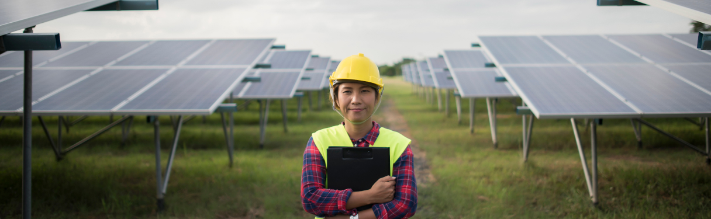

Solar-Powered Agriculture: Transforming Farming Practices for a Greener Future
Amidst the pressing need for sustainable solutions in agriculture, solar-powered farming is emerging as a transformative trend, revolutionizing traditional farming practices and paving the way for a greener future. By harnessing the power of the sun, farmers around the world are adopting solar technologies to enhance efficiency, reduce costs, and minimize environmental impact.
Solar-powered irrigation systems are at the forefront of this agricultural revolution, offering farmers a reliable and cost-effective way to water their crops. These systems utilize solar panels to power pumps and drip irrigation systems, delivering water directly to the roots of plants with minimal waste. By eliminating the need for fossil fuel-powered pumps and diesel generators, solar irrigation systems not only reduce greenhouse gas emissions but also lower operating costs for farmers.
In addition to irrigation, solar energy is being integrated into various aspects of farm operations, from powering electric fences and lighting to running agricultural machinery and processing equipment. Solar panels installed on farm buildings and structures provide a renewable source of electricity, enabling farmers to reduce their reliance on the grid and operate more sustainably.
Furthermore, solar energy offers farmers the opportunity to diversify their income streams and tap into new revenue sources. Through programs such as net metering and solar leasing, farmers can generate additional income by selling excess electricity back to the grid or leasing their land for solar development. This not only provides financial benefits for farmers but also contributes to the expansion of renewable energy infrastructure in rural areas.
Beyond the economic benefits, solar-powered agriculture also holds significant environmental promise. By transitioning to clean energy sources, farmers can reduce their carbon footprint and mitigate the impacts of climate change. Additionally, solar-powered farms often incorporate sustainable farming practices such as agroforestry and soil conservation, further enhancing their environmental sustainability.
As the global population continues to grow and the demand for food increases, the adoption of solar-powered agriculture is poised to play a vital role in ensuring food security and sustainable development. By embracing solar technologies, farmers can improve crop yields, conserve water resources, and contribute to a more resilient and sustainable food system for future generations.
In conclusion, solar-powered agriculture represents a paradigm shift in farming practices, offering a greener, more efficient, and economically viable approach to food production. With continued innovation and investment in solar technologies, the agricultural sector has the potential to lead the way towards a more sustainable and prosperous future.
